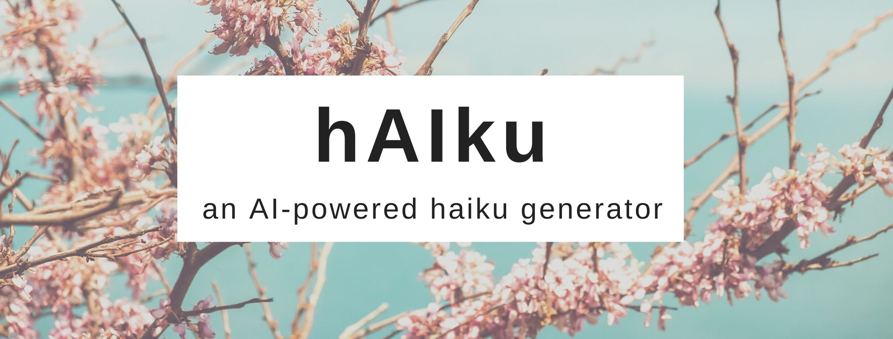

I’m sure you have heard the term haiku at least once in your life. Haiku is a type of short form poetry that originated in Japan 🇯🇵. These pieces of poetry consist of three phrases, where the first and third line have 5 syllables each and the second one has 7 syllables. This makes a total of 17 syllables per poem which follow a 5-7-5 pattern.
Haikus have become popular in other cultures too. For example, one can find haikus written in English and many other languages, although these do not always deal with the same themes as traditional Japanese haikus. Haikus are now part of pop culture and one can easily find thousands of them with a simple Google search. So, since it seems everyone can now write a haiku and call themselves a poet, for this project I decided to create a haiku generator using Python.
Briefly summarized, I compiled a bunch of texts and wrote a Python script that would output a random haiku using words from those texts, always following the 5-7-5 rule. Want to know how I did it? Keep on reading or check out the code here! 🤓
To be honest, any long text would have worked for this project, as the script would simply extract words (or groups of words) from the text to write the haiku.
However, to keep it more “literary” I decided to use a variety of excerpts from famous books available at Project Gutenberg. More specifically, I used excerpts from Metamorphosis (Franz Kafka), The Great Gatsby (Scott Fitzgerald), Anthem (Ayn Rand), and Moby Dick (Herman Melville) 📚.
The final dataset can be found here.
The first thing I did was to import and install some helpful Python libraries. The most important ones for our purposes are spaCy and SyllaPy.
SpaCy is a natural language processing library that allows you to do plenty of things with language data, from tokenization, to POS-tagging, to even named entity recognition. I used it to identify patterns in the text data and build the haikus.
# Loading the English language model
import spacy.cli
spacy.cli.download("en_core_web_sm")
nlp = spacy.load("en_core_web_sm")
# Matcher will help identify patterns in the text
from spacy.matcher import Matcher
SyllaPy, on the other hand, allows you to calculate syllable counts for English words. This is important because I had to follow the 5-7-5 rule when building the haikus, so I needed to be able to count the number of syllables per word somehow.
!pip install syllapy
import syllapy
The script has two main parts: a section where I extracted random groups of words from the text and a section where I filtered them out to keep only those that had either 5 or 7 syllables.
Here, I used Matcher to identify random groups of 2, 3, and 4 words in the dataset. Matcher works by specifying a linguistic pattern and applying it to your dataset. It will then identify and extract all words (or groups of words) that follow that pattern. Below, you can see an example:
matcher = Matcher(nlp.vocab)
pattern = [{"POS": "NOUN"}, {"POS": "VERB"}]
matcher.add("SamplePattern", [pattern])
The key part here is the second line, where you specify the pattern you are interested in. The pattern always needs to appear within a list (hence the []). Also, for each ‘object’ you want to identify in the text, you need to create a dictionary, where the keys describe the type of token and the values describe its attributes. For example, the sequence {"POS": "NOUN"} means that the token we are looking for is a ‘part of speech’ (POS) whose attribute is a ‘noun’. Thus, all the second line does is say that Matcher will look for a noun that is followed by a verb. That’s it! ✨
One thing to keep in mind is that attributes are specified using the Universal Dependencies framework, so if you are looking for an adjective, you can’t write {"POS": "ADJECTIVE"}, but rather {"POS": "ADJ"}. You can find all the Universal POS tags here.
Once you establish a pattern, you need to identify it in the text. For that, you can use a code snippet like the one below (I added two extra print statements so you can see how it works).
doc = nlp(texts)
matches = matcher(doc)
for match_id, start, end in matches:
string_id = nlp.vocab.strings[match_id]
span = doc[start:end]
print(match_id, string_id, start, end, span.text) # Print match info
print(span.text) # Print match only
Now that you know how Matcher works, I will explain what patterns I tried to identify in the text to build my haiku. I decided to go for groups of words which were either 2, 3, or 4 words long. Furthermore, for each group of words, I specified what parts of speech I wanted the first and last word in the group to be. This is the code I used:
# Groups of 2 words
matcher2w = Matcher(nlp.vocab)
pattern = [{"POS":{"IN": ["NOUN", "ADV", "ADJ", "ADP"]}},
{"POS":{"IN": ["VERB", "NOUN"]}}]
matcher2w.add("2words", [pattern])
# Groups of 3 words
matcher3w = Matcher(nlp.vocab)
pattern = [{"POS":{"IN": ["NOUN", "ADV", "ADJ", "VERB", "ADP"]}},
{"IS_ASCII": True, "IS_PUNCT": False},
{"POS":{"IN": ["VERB", "NOUN", "ADV", "ADJ"]}}]
matcher3w.add("3words", [pattern])
# Groups of 4 words
matcher4w = Matcher(nlp.vocab)
pattern = [{"POS":{"IN": ["NOUN", "ADV", "ADJ", "VERB", "ADP"]}},
{"IS_ASCII": True, "IS_PUNCT": False},
{"IS_ASCII": True, "IS_PUNCT": False},
{"POS":{"IN": ["VERB", "NOUN", "ADV", "ADJ"]}}]
matcher4w.add("4words", [pattern])
# Identify patterns in the text
doc = nlp(texts)
matches2w = matcher2w(doc)
matches3w = matcher3w(doc)
matches4w = matcher4w(doc)
As you can see from the {"IN": [ ... ]} sequences, I allowed for plenty of flexibility. That is, different POS could appear at the beginning of the pattern as well as at the end of the pattern. You can explore more patterns here.
After identifying groups of words, I had to leave out those which did not have 5 nor 7 syllables, since those are not useful to build the haiku. To do that, I used SyllaPy to count the syllables of each group of words and leave out those groups of words that I would not be able to use.
This is the code I used:
lines_5_syll = []
lines_7_syll = []
for match_id, start, end in matches2w + matches3w + matches4w:
string_id = nlp.vocab.strings[match_id]
span = doc[start:end]
syllable_count = 0
for token in span:
syllable_count += syllapy.count(token.text)
if syllable_count == 5:
if span.text not in lines_5_syll:
lines_5_syll.append(span.text)
if syllable_count == 7:
if span.text not in lines_7_syll:
lines_7_syll.append(span.text)
Lastly, I wrote a simple line of code to print a haiku by putting together two lines of 5 syllables each and one line of 7 syllables following a 5-7-5 rule 📝.
This is the code I used for that (I had to import the random library first):
print("{0}\n{1}\n{2}".format(random.choice(lines_5_syll), random.choice(lines_7_syll), random.choice(lines_5_syll)))
This is a haiku I was able to generate with this script!
closed in the evening
sense of the fundamental
now at any price
It probably doesn’t make much sense, but does it have to? 🤔